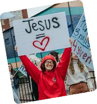

📖 “Your word is a lamp to my feet and a light to my path.”
📖 “Your word is a lamp to my feet and a light to my path.”
📖 “Your word is a lamp to my feet and a light to my path.”
Read Now

PSIT Pops is dedicated to sharing biblical
reflections, devotionals, and spiritual
insights to encourage believers in their daily
walk with Christ.
Learn More About Us